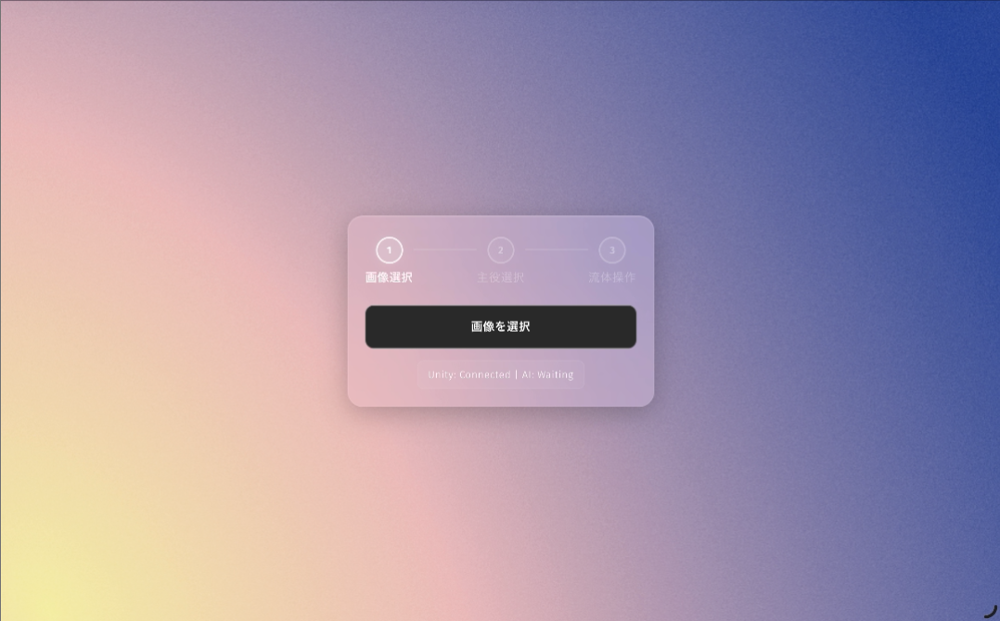
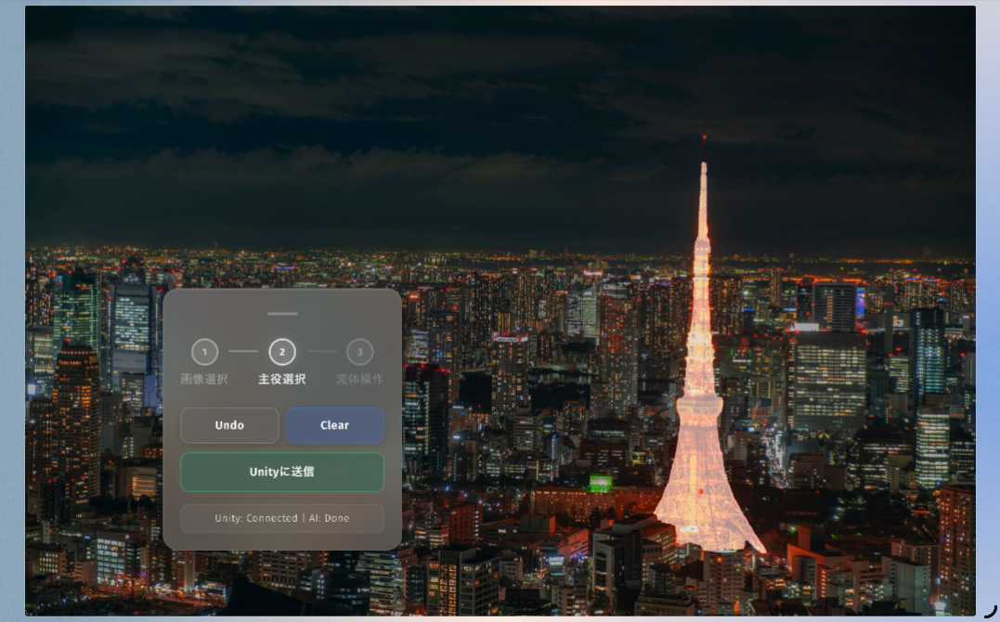
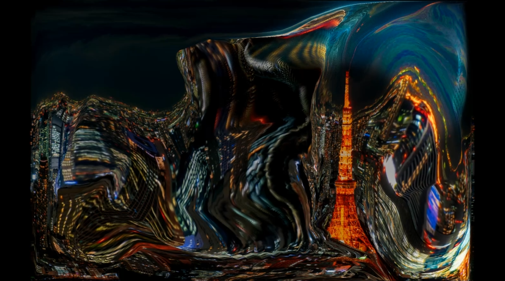
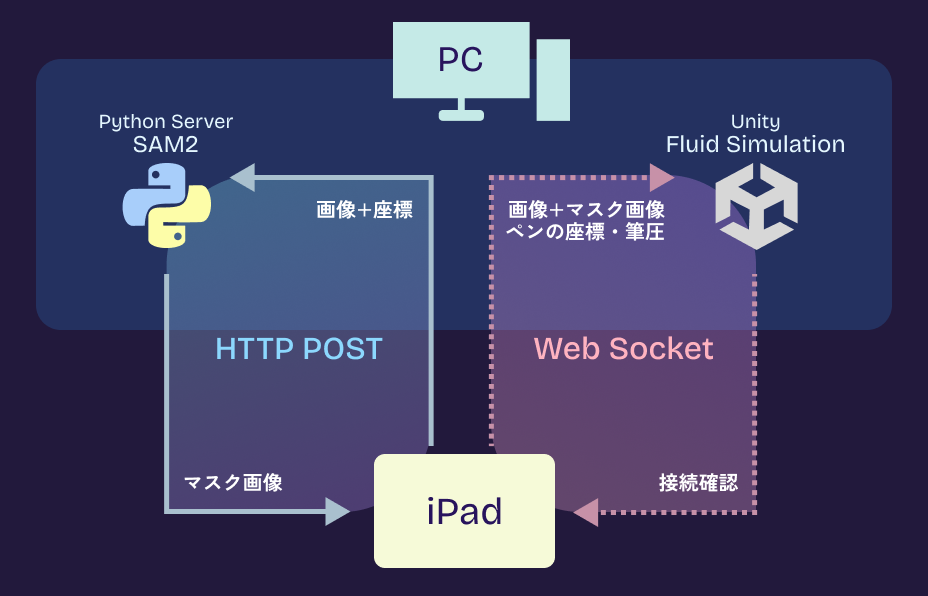

🔊Sound ON
Concept
静止した写真を、流体として触れる
選んだ一枚を流体へと変え、直感的にかき混ぜるインタラクティブ・キャンバス。
ゴッホの「星月夜」に見られるような渦の動きから着想を得て、静止した画像に流体の動きを持たせるインタラクティブアートを制作しました。
アップロードした写真の被写体はそのままに、背景を流体としてApplePencilと手でリアルタイムにかき混ぜることが出来ます。
Experience Flow
体験の流れ

01 画像をアップロード

02 固定される主役を選択

03 流体を操作する
Technical Approach
本作では、iPadとPCをリアルタイムに繋ぐ通信設計、写真の色彩を保つ流体シミュレーションのアーキテクチャ、そして実装中に発生したバグの根本解決という3つの技術的挑戦に取り組みました。
データに応じた通信設計
この作品では、HTTP通信とWebSocketという2つの通信手法をデータの性質に応じて使い分けています。
主役選択のフェーズでは、iPadのブラウザからPythonサーバーへHTTP通信で画像とタップ座標を送信します。HTTPはリクエストに対してレスポンスを返す一往復の通信です。 AI推論はタップのたびに「依頼→結果を受け取る」という単発の処理で完結するため、接続を維持し続ける必要が無くHTTPの設計と一致しています。
UnityとはWebSocketで常時接続しています。他のリアルタイム通信手法にOSCがありますが、OSCは軽量データ送信に特化しており、画像送信には適していません。本作品ではAI推論の結果として生成されるマスク画像と元画像をiPadからUnityに送信するため、より柔軟なデータ送受信が可能なWebSocketを採用しました。
また、iPadのブラウザ上で動作するUIを構築する上でも、ブラウザ標準でサポートされるWebSocketは必然的な選択でした。
WebSocketはHTTPとは異なり、一度接続を確立すると双方向でリアルタイムにデータを送受信できます。
この作品では2種類のデータをWebSocketで送信しています。①主役決定後に元画像とマスク画像をまとめて送信すること、②流体操作中はApplePencilの座標と筆圧をリアルタイムに送り続けることです。

通信システム図
流体計算のハイブリッドアーキテクチャ
写真の色彩を保ちながら複雑な流体挙動をリアルタイムで表現するために、2つの手法を比較検討しました。
格子法(Eulerian法)はナビエストークス方程式に基づく滑らかな流れの表現を得意としていますが、色情報を一緒に計算させると隣接ピクセルと混合し続け、写真がすぐに濁った単色に収束してしまいます。
一方、粒子法(Lagrangian法)は色は濁りませんが、数百万の粒子をリアルタイム処理することが困難です。
そこで、両手法の利点を組み合わせたハイブリッドアプローチを採用しました。流体の動きの計算は不可視の2Dグリッド上で行い、その結果をもとに写真の色情報を持つ数百万のパーティクルをCompute
Shaderで移流させます。
またSAM2が生成したマスク画像をグリッド上の障害物（境界条件）として反映することで、主役のシルエットを保ちながら背景だけが流体として振る舞う表現を実現しました。
色が濁らない美しい流体
復元力の設計が招いたバグと、連続的なブレンドによる根本解決
パーティクルが元の位置に戻る時に、主役のシルエットに引っかかり輪郭沿いに不自然な塊や隙間が残る問題が発生しました。
フラミンゴに引っかかって不自然な隙間が出来ている様子
解決策として、帰還時のみ障害物の衝突判定をスキップしパーティクルを幽霊のようにすり抜けさせる「Ghost Return」を実装しました。
流速とパーティクルの速度が一定値を下回ったかどうかで「風が止んだ状態」を二値で判定し、止んでいる時は強いバネで元の位置へ引き戻す設計です。
しかしこれが新たな問題を引き起こします。弱い力でドラッグした際、カーソル付近はギリギリ「動いている」と判定されて流体として動き出しますが、少し離れるだけで閾値を下回り「止まっている」と判定されて強力なバネでその場に固定されます。
「動く水」と「動かない岩」が隣り合う断層が生まれ、空間が引き裂かれるような地割れが発生しました。
単純な二値化によって裂け目が発生した様子
根本原因は二値による状態の切り換えそのものでした。そこでこの判定を廃止し、流速とパーティクル速度から0~1の連続値を算出する設計に書き直しました。 流体の力・復元力・粘性の全てをこの連続値から滑らかにブレンドすることで、カーソル(加えた力の中心地)から離れるにつれて状態が連続的に遷移し、断層が消えました。 Ghost Returnの思想はこの連続値に対する条件として引き継いでいますが、その手前で全パラメータが既に連続的にブレンドされているため地割れは発生しません。